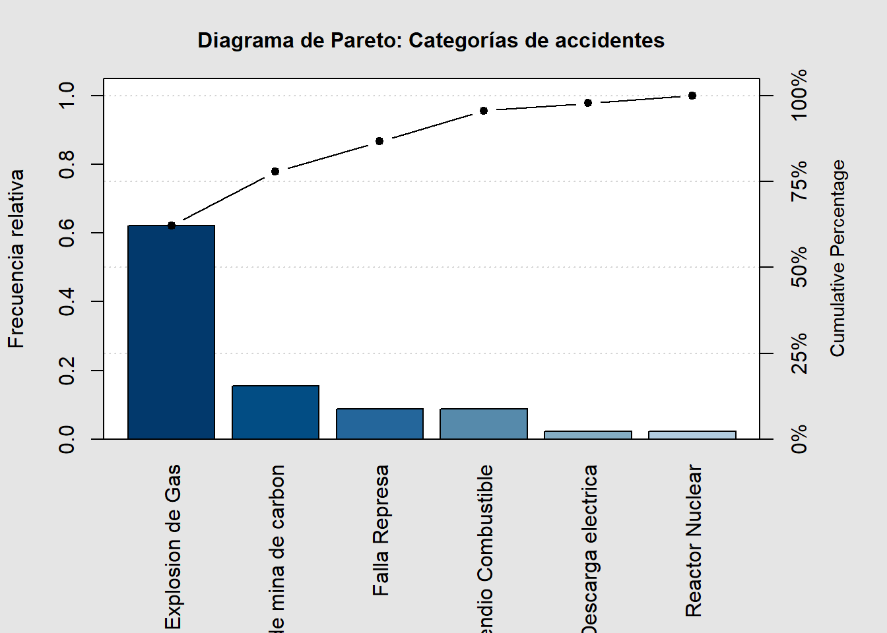
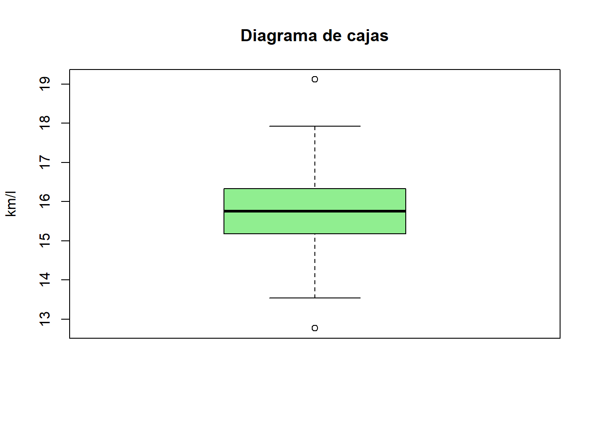
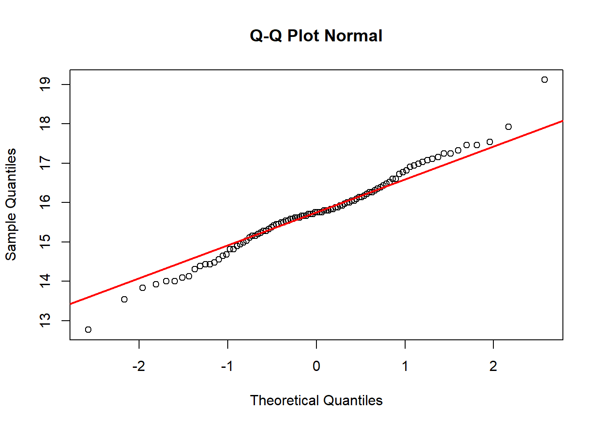

# Instalar librerías si no están disponibles
# install.packages(c("openxlsx", "qcc", "modeest", "psych", "moments"))
library(openxlsx) # para leer archivos Excel
library(qcc) # para gráficos de control y Pareto
library(modeest) # para calcular la moda
library(psych) # para análisis descriptivo
library(moments) # para asimetría y curtosis01_Introducción_y_Estadística_Descriptiva
📘 Material Teórico
Este laboratorio se basa en el documento “01_Introducción_y_Estadística_Descriptiva (versión imprimible)”, donde se revisan los conceptos fundamentales de la estadística descriptiva y su aplicación práctica en RStudio.
📑 Contenido del PDF
- Introducción a la estadística
- Concepto de variable aleatoria y datos
- Tipos de datos: cualitativos y cuantitativos
- Métodos gráficos para datos cualitativos y cuantitativos
- Gráfico de barras, torta y Pareto
- Histogramas y densidades
- Gráfico de barras, torta y Pareto
- Medidas numéricas
- Media, mediana, moda, rango, varianza, desviación estándar, coeficiente de variación
- Media, mediana, moda, rango, varianza, desviación estándar, coeficiente de variación
- Distribuciones y normalidad
- Pruebas de Shapiro-Wilk y Kolmogorov-Smirnov
- Q-Q plot
- Pruebas de Shapiro-Wilk y Kolmogorov-Smirnov
- Asimetría y curtosis
🧠 Objetivo del Laboratorio
Aprender a aplicar herramientas básicas de estadística descriptiva en R, utilizando datos cualitativos y cuantitativos, comprendiendo cómo construir gráficos, calcular medidas y verificar normalidad de una distribución.
🔧 Preparación del entorno
🧩 Parte A — Datos cualitativos
datos1 <- read.xlsx("../data_epg/Ejemplo1.xlsx", sheet = "Hoja1", colNames = TRUE)
head(datos1) Categoria Frecuencia Acumulado
1 Explosion de Gas 28 28
2 Colapso de mina de carbon 7 35
3 Falla Represa 4 39
4 Incendio Combustible 4 43
5 Descarga electrica 1 44
6 Reactor Nuclear 1 45🔍 Explicación
read.xlsx() lee archivos Excel. head() muestra las primeras filas del conjunto de datos.
total <- sum(datos1$Frecuencia, na.rm = TRUE)
datos1$relativa <- datos1$Frecuencia / total
datos1 Categoria Frecuencia Acumulado relativa
1 Explosion de Gas 28 28 0.62222222
2 Colapso de mina de carbon 7 35 0.15555556
3 Falla Represa 4 39 0.08888889
4 Incendio Combustible 4 43 0.08888889
5 Descarga electrica 1 44 0.02222222
6 Reactor Nuclear 1 45 0.02222222🔍 Explicación
Calcula la frecuencia total y la frecuencia relativa (proporción de cada categoría).
relativo <- setNames(as.numeric(datos1$relativa), datos1$Categoria)
relativo Explosion de Gas Colapso de mina de carbon Falla Represa
0.62222222 0.15555556 0.08888889
Incendio Combustible Descarga electrica Reactor Nuclear
0.08888889 0.02222222 0.02222222 🔍 Explicación
Asigna nombres a los valores para construir gráficos.
barplot(relativo,
xlab = "Categorías de accidentes",
ylab = "Frecuencia relativa",
las = 2,
col = "steelblue",
main = "Gráfico de barras de frecuencias relativas")
🔍 Explicación
Crea un gráfico de barras para visualizar proporciones entre categorías.
pie(relativo,
labels = names(relativo),
col = rainbow(length(relativo)),
main = "Distribución porcentual de accidentes")
🔍 Explicación
Gráfico circular para representar la proporción de cada categoría.
par(mar = rep(3, 4))
pareto.chart(relativo,
ylab = "Frecuencia relativa",
main = "Diagrama de Pareto: Categorías de accidentes")
Pareto chart analysis for relativo
Frequency Cum.Freq. Percentage Cum.Percent.
Explosion de Gas 0.62222222 0.62222222 62.22222222 62.22222222
Colapso de mina de carbon 0.15555556 0.77777778 15.55555556 77.77777778
Falla Represa 0.08888889 0.86666667 8.88888889 86.66666667
Incendio Combustible 0.08888889 0.95555556 8.88888889 95.55555556
Descarga electrica 0.02222222 0.97777778 2.22222222 97.77777778
Reactor Nuclear 0.02222222 1.00000000 2.22222222 100.00000000par(mar = c(5, 4, 4, 2) + 0.1)🔍 Explicación
El diagrama de Pareto ordena categorías y muestra la proporción acumulada.
📊 Parte B — Datos cuantitativos
datos2 <- read.xlsx("../data_epg/Ejemplo2.xlsx", sheet = "Hoja1", colNames = TRUE)
milla <- 1.6093
galon <- 3.78
factorconversion <- milla / galon
datos2$EPA_Mileage_Ratings_km_l <- factorconversion * datos2$EPA_Mileage_Ratings_milla_galon🔍 Explicación
Convierte unidades de rendimiento de millas/galón a km/litro.
plot(datos2$EPA_Mileage_Ratings_km_l,
main = "Rendimiento EPA (km/l)",
ylab = "km/l",
xlab = "Observaciones",
type = "b", col = "darkgreen")
🔍 Explicación
Muestra el rendimiento por observación (útil para detectar valores atípicos).
hist(datos2$EPA_Mileage_Ratings_km_l,
main = "Histograma del rendimiento (EPA)",
xlab = "km/l",
freq = FALSE,
col = "lightblue")
lines(density(datos2$EPA_Mileage_Ratings_km_l, na.rm = TRUE))
m <- mean(datos2$EPA_Mileage_Ratings_km_l, na.rm = TRUE)
s <- sd(datos2$EPA_Mileage_Ratings_km_l, na.rm = TRUE)
curve(dnorm(x, mean = m, sd = s), add = TRUE, col = "red", lwd = 2)
🔍 Explicación
Combina histograma, densidad empírica y curva normal teórica para comparar formas.
boxplot(datos2$EPA_Mileage_Ratings_km_l,
main = "Diagrama de cajas",
ylab = "km/l",
col = "lightgreen",
outline = TRUE)
🔍 Explicación
El boxplot muestra mediana, cuartiles y posibles valores extremos.
media <- mean(datos2$EPA_Mileage_Ratings_km_l, na.rm = TRUE)
mediana <- median(datos2$EPA_Mileage_Ratings_km_l, na.rm = TRUE)
moda <- mfv(datos2$EPA_Mileage_Ratings_km_l)
rango <- range(datos2$EPA_Mileage_Ratings_km_l, na.rm = TRUE)
desv <- sd(datos2$EPA_Mileage_Ratings_km_l, na.rm = TRUE)
cv <- desv / media
cuant <- quantile(datos2$EPA_Mileage_Ratings_km_l, probs = c(0, 0.25, 0.5, 0.75, 1), na.rm = TRUE)
list(Media = media, Mediana = mediana, Moda = moda,
Minimo = rango[1], Maximo = rango[2],
Desviacion = desv, Coef_Variacion = cv,
Cuantiles = cuant)$Media
[1] 15.74985
$Mediana
[1] 15.75241
$Moda
[1] 15.75241
$Minimo
[1] 12.77222
$Maximo
[1] 19.11576
$Desviacion
[1] 1.029397
$Coef_Variacion
[1] 0.06535917
$Cuantiles
0% 25% 50% 75% 100%
12.77222 15.18830 15.75241 16.31651 19.11576 🔍 Explicación
Calcula medidas de tendencia central, dispersión y posición.
shapiro.test(datos2$EPA_Mileage_Ratings_km_l)
Shapiro-Wilk normality test
data: datos2$EPA_Mileage_Ratings_km_l
W = 0.98814, p-value = 0.5185ks.test(datos2$EPA_Mileage_Ratings_km_l, pnorm, m, s)
Asymptotic one-sample Kolmogorov-Smirnov test
data: datos2$EPA_Mileage_Ratings_km_l
D = 0.067046, p-value = 0.7597
alternative hypothesis: two-sidedqqnorm(datos2$EPA_Mileage_Ratings_km_l, main = "Q-Q Plot Normal")
qqline(datos2$EPA_Mileage_Ratings_km_l, col = "red", lwd = 2)
🔍 Explicación
Evalúa la normalidad mediante pruebas estadísticas y gráfico Q-Q.
asimetria <- skewness(datos2$EPA_Mileage_Ratings_km_l, na.rm = TRUE)
curtosis <- kurtosis(datos2$EPA_Mileage_Ratings_km_l, na.rm = TRUE)
c(skewness = asimetria, kurtosis = curtosis) skewness kurtosis
0.05014194 3.67255577 🔍 Explicación
Mide la forma de la distribución: asimetría (cola) y curtosis (peso de colas).
set.seed(123)
datos_simulados <- rnorm(
n = sum(!is.na(datos2$EPA_Mileage_Ratings_km_l)),
mean = m, sd = s
)
hist(datos_simulados, main = "Simulación normal teórica",
xlab = "km/l (simulado)", freq = FALSE, col = "lightgray")
curve(dnorm(x, mean = m, sd = s), add = TRUE, lwd = 2, col = "blue")
🔍 Explicación
Simula una muestra normal teórica y la compara con los datos observados.